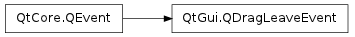

QDragLeaveEvent ¶

Detailed Description ¶
The PySide.QtGui.QDragLeaveEvent class provides an event that is sent to a widget when a drag and drop action leaves it.
This event is always preceded by a PySide.QtGui.QDragEnterEvent and a series of PySide.QtGui.QDragMoveEvent s. It is not sent if a PySide.QtGui.QDropEvent is sent instead.
- class PySide.QtGui. QDragLeaveEvent ¶
-
Constructs a PySide.QtGui.QDragLeaveEvent .
Warning
Do not create a PySide.QtGui.QDragLeaveEvent yourself since these objects rely on Qt’s internal state.